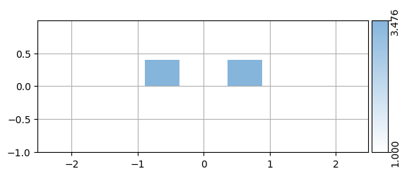
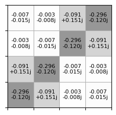

import gdsfactory as gf
import meow as mw
import numpy as np
import matplotlib.pyplot as plt
plt.rcParams["pcolor.shading"]="auto"2023-11-14 08:56:39.030 | INFO | gdsfactory.config:__init__:205 - LogLevel: INFOmeowpropagate_modes
import gdsfactory as gf
import meow as mw
import numpy as np
import matplotlib.pyplot as plt
plt.rcParams["pcolor.shading"]="auto"2023-11-14 08:56:39.030 | INFO | gdsfactory.config:__init__:205 - LogLevel: INFOdef example_extrusions(
t_slab: float = 0.0,
t_soi: float = 0.4,
t_ox: float = 0.0,
):
""" create some simple extrusion rules
Args:
t_slab: the slab thickness
t_soi: the SOI thickness
t_ox: the oxide layer thickness
"""
extrusions = {
(1, 0): [
mw.GdsExtrusionRule(
material=mw.silicon,
h_min=0.0,
h_max=0.0 + t_soi,
mesh_order=1,
),
],
}
return extrusionsl_taper=10
l_center=20
w_center=3
mmi = gf.components.mmi2x2(length_taper=l_taper,
length_mmi=l_center,
width_mmi=w_center)
c = gf.Component()
ref = c.add_ref(mmi)
ref.xmin = 0
mmi = c
extrusion_rules = example_extrusions()
structs = mw.extrude_gds(mmi, extrusion_rules)
#mw.visualize(structs, scale=(1, 1, 0.2))You can install `pip install gdsfactory[cad]` for better visualization/home/jd/work/side/skill-challenge/.venv/lib/python3.10/site-packages/gdsfactory/component.py:1538: UserWarning: Component 'Unnamed_eee44b9e' contains 1 Unnamed cells
gdspath = component.write_gds(logging=False)eps = 1e-10
w_sim = w_center + 2
h_sim = 2.0
mesh = 100
num_cells = 10
Ls = [l_taper / num_cells]*num_cells
Ls[-1] -= eps
Ls[0] -= eps
Ls += [2*eps, l_center-2*eps, 2*eps] + Ls
Ls = [eps] + Ls + [eps]
print(Ls)
cells = mw.create_cells(
structures=structs,
mesh=mw.Mesh2d(
x=np.linspace(-w_sim/2, w_sim/2, mesh + 1),
y=np.linspace(-h_sim/2, h_sim/2, mesh + 1),
),
Ls=Ls
)
#for cell in cells:
# mw.visualize(cell)[1e-10, 0.9999999999, 1.0, 1.0, 1.0, 1.0, 1.0, 1.0, 1.0, 1.0, 0.9999999999, 2e-10, 19.9999999998, 2e-10, 0.9999999999, 1.0, 1.0, 1.0, 1.0, 1.0, 1.0, 1.0, 1.0, 0.9999999999, 1e-10]env = mw.Environment(wl=1.55, T=25.0)
css = [mw.CrossSection(cell=cell, env=env) for cell in cells]
mw.visualize(css[0])
mw.visualize(css[-1])
from tqdm.notebook import tqdm
modes = [mw.compute_modes(cs, num_modes=num_modes) for cs in tqdm(css)]{'left@0': 0, 'left@1': 1, 'right@0': 2, 'right@1': 3}